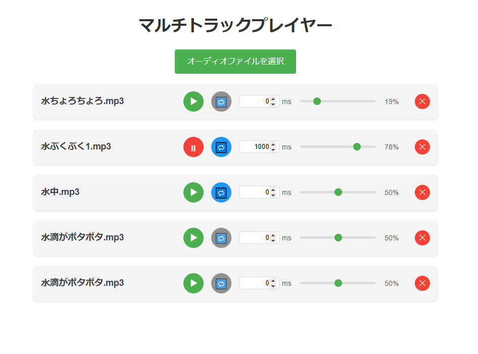

Dr. シノン のポートフォリオ
生物学者 × フリーランスエンジニア
About Me
博士（学術）を生物学（進化・共生）の研究で取得し、大学で勤務する傍ら、フリーランスエンジニアとして活動しています。生物学の知見とプログラミングスキルを融合させ、革新的なソリューションを生み出すことに情熱を注いでいます。
将来の目標は、より良いインターネットコミュニティを形成するシステムの開発です。生物の共生システムから学んだ知見を活かし、人々がより健全に交流できる場を創造したいと考えています。
Skills
研究スキル
- 進化生物学
- 共生生物学
- データ分析・統計
プログラミング
- Web開発（HTML, CSS, JavaScript）
- Python・C++・C#
- 機械学習・AI実装
その他
- SNSボット開発
- 生成AI活用
- 科学コミュニケーション
Projects
AI搭載SNSボット - シノンJr.
機械学習を活用して、ユーザーと対話するSNSボット。自然言語処理技術を用いて、ユーザーの興味に合わせた情報提供や対話を行います。
シノンJr.をBlueskyで見るマルチトラックオーディオミキサー
複数のオーディオファイルを web ブラウザで同時に、独立して再生可能です。さらにループ機能や、再ループまでの待機時間設定なども実装。
マルチトラックオーディオミキサーを使うDiscord 連携 e-ラーニングシステム

Discord と連携した e-ラーニングのシステム。学習とテストの機能があり、テストに合格すると Discord のロールが付与されます。
その他
Line と連携した在庫管理・受注発注システム。
QR コードを改変して、面積当たりの情報量を増やした QR コード様システム。
生成 AI と音声読み上げ AI を連携した会話 bot。
科学的な文章の添削・評価をしてくれる添削 AI。
BLAST 検索を利用した生物の DNA 配列から生物種の推定を高精度で行うシステム。
統計・作図システム。
即時学習によって変化するボードゲーム AI。
AI Generated Gallery
生成AIを使用して作成した画像ギャラリーです。
※無断で使ってOK！でも営利利用（お金に関わる利用）はしないでね！
Contact
プロジェクトの依頼や共同研究のご提案など、お気軽にお問い合わせください。